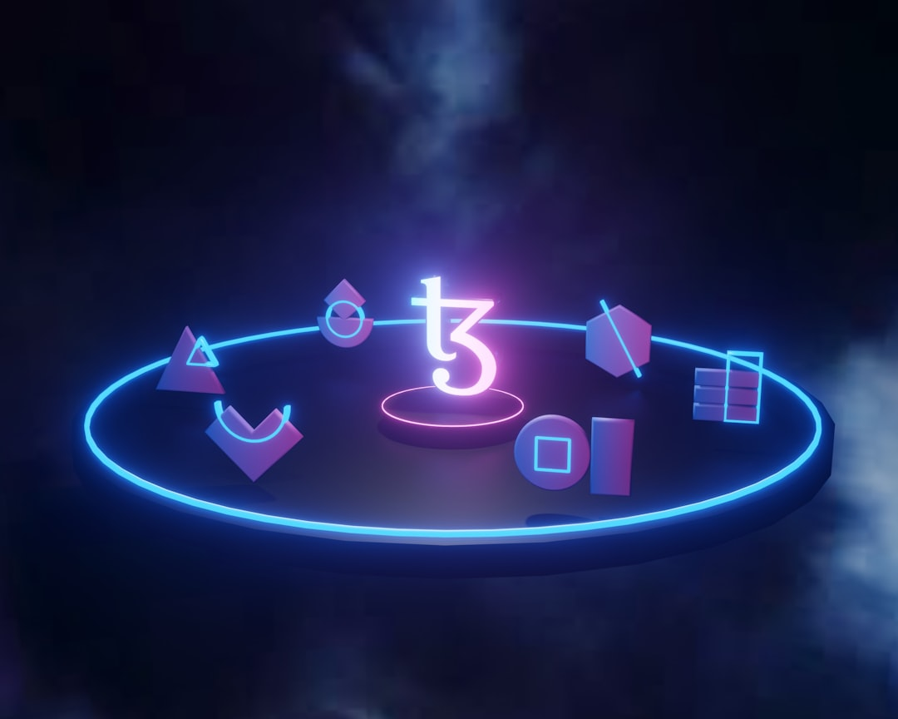

AURA Proximity: La Soluzione Innovativa per la Sicurezza di Motociclisti, Camperisti e Lavoratori Isolati

Innovazioni per la Sicurezza di Motociclisti, Camperisti, Atleti e Lavoratori Isolati nei Cantieri e Outdoor con AURA Proximity
- Le criticità operative derivanti da viaggi in colonna, infortuni isolati e assenza di rete 4G nelle aree remote.
- Gli effetti negativi sul business e sulla sicurezza di non disporre di strumenti di comunicazione affidabili e immediati.
- AURA Proximity, la piattaforma SaaS di RM Studio che combina radar tattico e chat Mesh P2P Web per garantire soccorso e coordinamento in mobilità senza app.
Analisi Approfondita della Notizia e delle Implicazioni Operative
Nel settore outdoor e delle attività all’aperto – come per motociclisti in viaggio in colonna o camperisti su strade isolate – la sicurezza costituisce una sfida complessa che coinvolge molteplici fattori.“Il D.Lgs 81/08” e le normative sulla sicurezza sul lavoro pongono attenzione specifica ai rischi dei lavoratori isolati nei cantieri e delle guide outdoor. Tuttavia, l’assenza di copertura cellulare affidabile, in particolare 4G, in molte aree remote crea una situazione critica: in caso di caduta, infortunio o smarrimento, il soccorso diventa complicato o impossibile senza una tecnologia adeguata.
Le tradizionali soluzioni si basano spesso su app mobile o dispositivi hardware che necessitano di configurazioni complesse, consumo energetico elevato o dipendenza da reti cellulari. Questo limita di fatto la loro efficacia in situazioni reali, soprattutto in ambienti naturali o zone con infrastrutture di comunicazione scarse.
Le Conseguenze e i Costi di Non Agire
Ignorare queste criticità significa esporsi a numerosi rischi operativi e finanziari. Motociclisti e camperisti che viaggiano in colonna senza adeguati strumenti di coordinamento rischiano di perdersi o ritrovarsi isolati in situazioni di emergenza. Per i lavoratori isolati nei cantieri, questo può tradursi in ritardi nei soccorsi in caso di cadute o infortuni gravi, con conseguenze sulla salute e potenziali responsabilità legali per le aziende.
Oltre alle implicazioni umane, i costi economici legati a incidenti senza risposta rapida sono significativi: perdere giorni di lavoro, dover fronteggiare sanzioni o risarcimenti, danni alla reputazione aziendale e inefficienze operative. Nel contesto sportivo e outdoor, un’esperienza negativa può compromettere l’affidabilità della guida o del servizio offerto, incidendo negativamente sul business a lungo termine.
Come AURA Proximity Risolve il Problema
AURA Proximity di RM Studio si presenta come risposta tecnologica avanzata e immediata a questi problemi critici. Questo SaaS innovativo combina un radar di prossimità tattico con una chat Mesh P2P 100% Web, eliminando la necessità di scaricare app o dipendere da infrastrutture cellulari tradizionali. L’accesso avviene direttamente tramite browser, rendendo l’uso semplice e veloce in ogni contesto.
Grazie al radar di prossimità, gli utenti ottengono un’interfaccia tattica futuristica che consente di rilevare la posizione esatta dei membri della colonna o del gruppo, evitando dispersioni. La chat Mesh P2P consente comunicazioni dirette peer-to-peer anche in assenza di segnale 4G, garantendo messaggi istantanei e affidabili.
Il sistema integra inoltre un Co-Pilota Vocale a mani libere, perfetto per motociclisti e atleti che necessitano di mantenere alta la concentrazione senza distrazioni. Il rilevamento automatico di impatti e cadute Man-Down (>3G) attiva immediatamente invii SOS su WhatsApp, riducendo drasticamente i tempi di intervento in emergenza. La bussola direzionale 3D facilita l’orientamento anche su sentieri complessi o in aree naturali dove il GPS può essere impreciso.
| Gestione Tradizionale | Con AURA Proximity |
|---|---|
| Dipendenza da rete 4G e copertura cellulare non garantita | Funziona con rete Mesh P2P 100% Web, senza necessità di 4G |
| Richiede installazione e configurazione di app mobili complesse | Accesso immediato via browser, nessuna app da scaricare |
| Comunicazioni intermittenti o assenti in ambienti isolati | Chat Mesh P2P con messaggi istantanei anche offline da rete cellulare |
| Nessun supporto per la rilevazione automatica di cadute e emergenze | Rilevamento Man-Down con invio SOS automatico via WhatsApp |
| Coordinazione visiva limitata e assenza di assistenza vocale | Radar tattico integrato e Co-Pilota Vocale a mani libere |
💡 Ti è stato utile questo approfondimento?
Condividilo con un collega o un amico del settore Motociclisti, Camperisti, Atleti, Responsabili Sicurezza Cantieri (D.Lgs 81/08) e Guide Outdoor a cui potrebbe interessare!
FAQ - Domande Frequenti per i Professionisti del Settore
1. AURA Proximity funziona anche in assenza totale di segnale cellulare?
Sì, grazie alla tecnologia Mesh P2P 100% Web, la comunicazione avviene direttamente tra i dispositivi tramite browser senza dipendere dal 4G o Wi-Fi.
2. È necessario installare applicazioni o software dedicati sul dispositivo?
No, AURA Proximity funziona integralmente via browser, evitando la necessità di download o aggiornamenti di app tradizionali.
3. Come avviene il rilevamento degli incidenti o cadute?
Il sistema dispone di sensori Man-Down integrati che, superato il soglia di impatto (>3G), attivano automaticamente l’invio di SOS via WhatsApp con indicazioni precise per il soccorso immediato.
Inizia Subito
Pass Viaggio Singolo a €4.90 o Piano Pro a €19/mese. Nessuna app da installare.
Fonti Ufficiali e Risorse Esterne
Scopri l'Intelligenza Artificiale per la tua attività
Ottimizza i processi e aumenta le vendite con le soluzioni B2B di RM Studio.
Scopri AURA Proximity